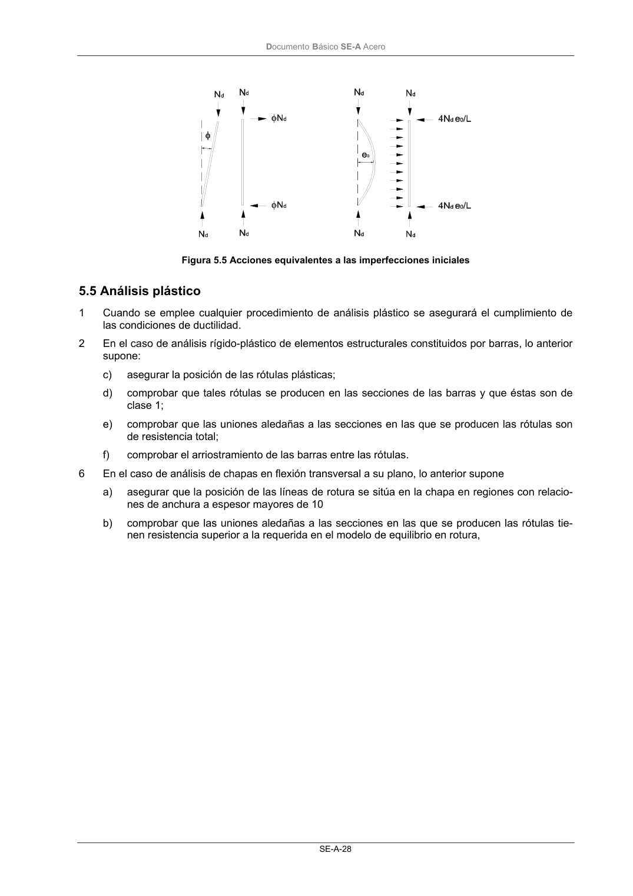

DB-SE-A · 5.5 Análisis plástico · versión 2007-10-23
SHA256: 9ed9ea694aabfbda3bfbbef40dfe9223fde05d13c35bc2ba9751e5a96a22a64f · página física 30 de 168 · métodos de encabezado
solo si están cotejados.
Formatos: Markdown · JSON de bloques · PDF p. 30 · imagen PNG
Documento Básico SE-A Acero SE-A-28 Figura 5.5 Acciones equivalentes a las imperfecciones iniciales 5.5 Análisis plástico 1 Cuando se emplee cualquier procedimiento de análisis plástico se asegurará el cumplimiento de las condiciones de ductilidad. 2 En el caso de análisis rígido-plástico de elementos estructurales constituidos por barras, lo anterior supone: c) asegurar la posición de las rótulas plásticas; d) comprobar que tales rótulas se producen en las secciones de las barras y que éstas son de clase 1; e) comprobar que las uniones aledañas a las secciones en las que se producen las rótulas son de resistencia total; f) comprobar el arriostramiento de las barras entre las rótulas. 6 En el caso de análisis de chapas en flexión transversal a su plano, lo anterior supone a) asegurar que la posición de las líneas de rotura se sitúa en la chapa en regiones con relacio- nes de anchura a espesor mayores de 10 b) comprobar que las uniones aledañas a las secciones en las que se producen las rótulas tie- nen resistencia superior a la requerida en el modelo de equilibrio en rotura,
